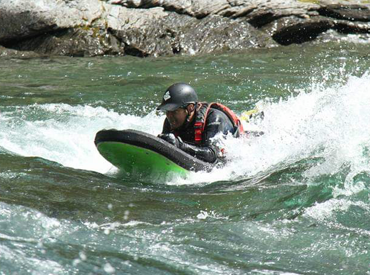
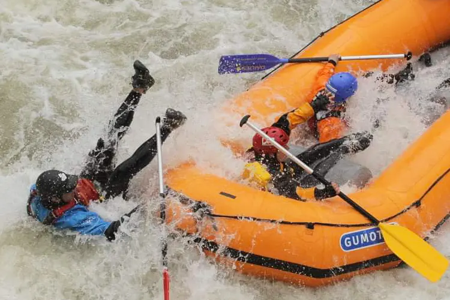

Somos una empresa familiar que da sus primeros pasos en 2023, aunque contamos con 23 años de experiencia guiando recorridos de río tanto en México como en el extranjero. Esta pequeña pero apasionada compañía nace de la dedicación y amor por las aventuras acuáticas, con el objetivo de compartir nuestra experiencia y entusiasmo contigo.
Soy el fundador de este proyecto familiar, el cual no habría sido posible sin el apoyo incondicional de mi familia.
Después de dedicar siete años al trabajo en Noruega junto a mi familia, tomamos la decisión de mudarnos de nuevo a México, específicamente a Cuernavaca, mi lugar de origen. Esta elección nos permitió estar más cerca de nuestra familia y devolver algo al río que nos introdujo al maravilloso mundo acuático.
Mi travesía en el mundo de los ríos comenzó en el año 2000, navegando el río Amacuzac. A lo largo de mi carrera, he tenido la oportunidad de trabajar en diversos lugares, como Veracruz, San Luis Potosí, Guerrero y Oaxaca en México, así como en Argentina, Costa Rica en América Latina, y en Eslovenia, Italia, Bulgaria y Noruega en Europa.
Durante los últimos diez años, viví en Suecia con mi familia, donde participé en expediciones de río en Italia, Bulgaria y Noruega. Fue en Noruega, mi hogar durante los últimos siete años, donde colaboré con distintas empresas del sector.
Poseo la certificación de Guía nivel IV-V y Trip Leader clase IV por la IRF (International Rafting Federation), además de cursos de rescate en aguas blancas otorgados por Rescue 3 Canadian, Rescue 3 International y Rescue 3 Europe. También he completado cursos de primeros auxilios en México, Suecia y Noruega, así como cursos de primeros auxilios en áreas remotas (Wilderness First Aids) por Sierra Rescue Norway.
Con más de 20 años de experiencia, inicio este proyecto con el sueño de atraer a más personas que deseen vivir este estilo de vida. Un estilo que nos lleva a ver el mundo con otra visión y sentirlo de una manera única, conectando con esta inmensa red de vida.
En nuestro compromiso por ofrecer experiencias inolvidables, nos dedicamos a operar recorridos de aventura en el río Amacuzac y otros destacados ríos de México. Promovemos activamente emocionantes actividades deportivas como el Rafting y el kayak de río. Además, brindamos oportunidades de recreación a través de actividades como Tubing y Dookies.
Aspiramos a ser una empresa sólidamente establecida, líder en la promoción de emocionantes deportes de río como el Rafting, el kayak de río, el tubing y los Dookies. Nos esforzamos por generar oportunidades de empleo, fortaleciendo la simbiosis entre las actividades humanas y la majestuosidad de los ríos.
